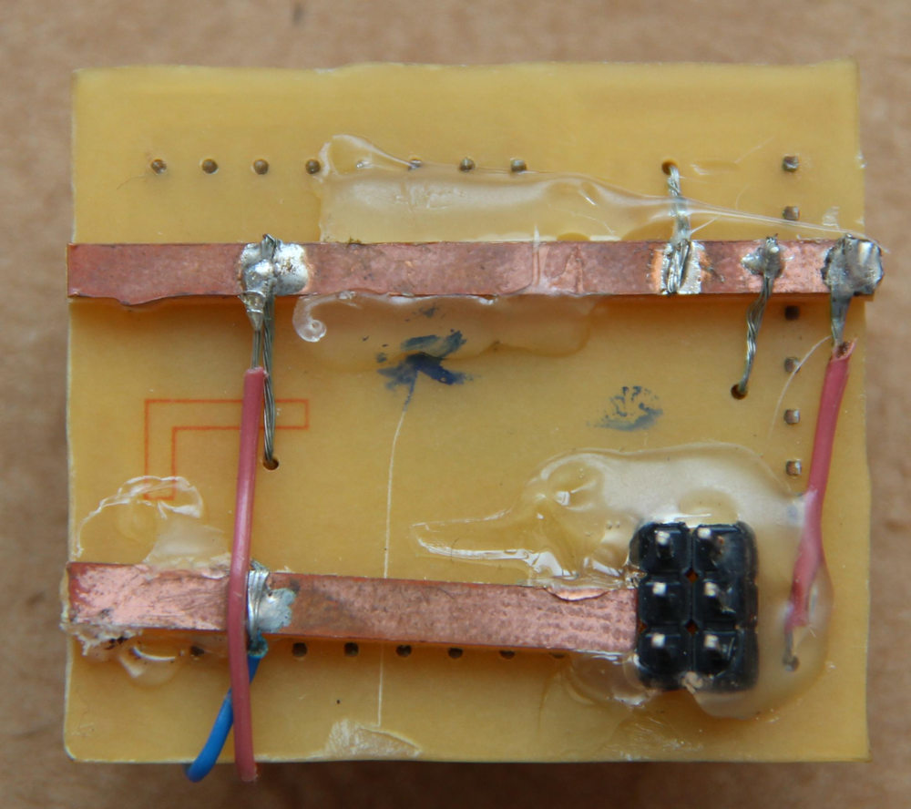
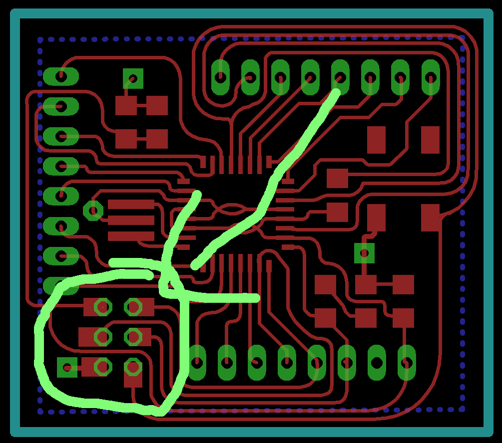

Electronics Design
The target of this module is to introduce PCB designing.
I have already done a few circuit designs, rather redesigned a the Fab-ISP key version to include two LEDs and replaces the crystal and two capacitors with a resonator. The documentation
is available at
here.
EAGLE is the preferred PCB design tool for me. I have been using this tool for some time. I have used a few other tools before, like PCB123, KiCAD and I have a little bit of experience with Kokopelli.
These are the Eagle Files for the FabISP-Key redesigned with LEDs.
Board-v2 Schematic-v2
There are few more designs I made for different various purposes. One such project is about making a DIY Soldering Station, basically a controller for the Weller PES51 pencil. I designed an PCB which
- Will amplify the signals from temperature sensor in the Pencil,
- Has a MOSFET to control the power delivered to the pencil,
- Has an NTC temperature sensor for getting the room temperature for accurate control of the iron.
Pictures
An interesting video of the component placement and routing.


EAGLE Files for the Amplifier Board
Schematic. Board.
The work is still in progress, but progress is slow. The hardware is mostly over and what is left is the firmware. I have also designed a compact Arduino-UNO compatible (only software, no hardware/pin compatibility) micro-controller board for use in the soldering station.
EAGLE Files are here
Board Schematic
The pictures are here.

I planned a proper double sided PCB with VCC and GND rails in the bottom layer. Since I had piece of single sided PCB laying around which is just enough for this board, so I
made the top layer from that board and made the funny looking rails for VCC and GND. The ISP connector has been mirrored so that it is on the bottom layer. The long rail with
lot of connection is GND and th other one is obviously VCC.
Programming a 20MHz board.
This is not compatible with any of the standard Arduino boards, because this board uses a 20MHz resonator. All the standard Arduinos using Atmega328p is running at either 26MHz or at
8MHz. It was my first time making a custom Micro-controller board. So I looked around to see who else has made a 20MHz version, many Fabduinos are like this, so someone must have
the required instructions.
I found a page of a previous fab academy student
Amir Lazarovich, he made a 20MHz Fabduino and he shared the required files, the Makefile, the boards.txt file and the bootloader. I used these files
to program my board, I copies the boards definition from this file and added a few on my own, these definitions were appended to ~/.arduino15/packages/arduino/hardware/avr/1.6.10/boards.txt.
Similarly I modified the Makefile located at ~/.arduino15/packages/arduino/hardware/avr/1.6.10/bootloaders/atmega/ to suit the new board.
Though the documentation by Amir was really helpful, I couldn't get the Arduino IDE to program my board, I was getting an error Error while uploading: missing 'upload.tool' configuration parameter.
Then I found
https://github.com/arduino/Arduino/wiki/Arduino-Hardware-Cores-migration-guide-from-1.0-to-1.6 and I followed this to edit my boards.txt file further. This was due to some
additional requirement by the new Arduino IDE. Finally I could program my board using my
UsbTiny-FabISP.
This is a video of the board being programmed I made for
Electronics Production Week.
The Makefile, boards.txt and the hex file can be downloaded below. The location of the files as in my system is also shown.
~/.arduino15/packages/arduino/hardware/avr/1.6.10/bootloaders/atmega/Makefile
~/.arduino15/packages/arduino/hardware/avr/1.6.10/boards.txt
~/.arduino15/packages/arduino/hardware/avr/1.6.10/bootloaders/atmega/ATmegaBOOT_168_atmega328_pro_20MHz.hex
Few Resources I Found Useful
The Arduino Permission Fix
You may find that you can't use Arduino IDE to program your board unless you start IDE as 'root'. There is a fix for this.
After installing the Arduino IDE in Arch or Arch based Distros like Manjaro, you need to add yourself to a few groups so that you can access serial devices.
gpasswd -a $USER uucp
gpasswd -a $USER lock
Define the correct udev.rules. For the Arch based distribution which I use, I created a file /etc/udev/rules.d/50-embedded_devices.rules
# USBtinyISP Programmer rules
SUBSYSTEMS=="usb", ATTRS{idVendor}=="1781", ATTRS{idProduct}=="0c9f", GROUP="users", MODE="0666"
SUBSYSTEMS=="usb", ATTRS{idVendor}=="16c0", ATTRS{idProduct}=="0479", GROUP="users", MODE="0666"
# USBasp Programmer rules http://www.fischl.de/usbasp/
SUBSYSTEMS=="usb", ATTRS{idVendor}=="16c0", ATTRS{idProduct}=="05dc", GROUP="users", MODE="0666"
# Mdfly.com Generic (SiLabs CP2102) 3.3v/5v USB VComm adapter
SUBSYSTEMS=="usb", ATTRS{idVendor}=="10c4", ATTRS{idProduct}=="ea60", GROUP="users", MODE="0666"
#Atmel AVR Dragon (dragon_isp) rules
SUBSYSTEM=="usb", ATTRS{idVendor}=="03eb", ATTRS{idProduct}=="2107", GROUP="users", MODE="0666"
#Atmel AVR JTAGICEMKII rules
SUBSYSTEM=="usb", ATTRS{idVendor}=="03eb", ATTRS{idProduct}=="2103", GROUP="users", MODE="0666"
#Atmel Corp. AVR ISP mkII
SUBSYSTEM=="usb", ATTRS{idVendor}=="03eb", ATTRS{idProduct}=="2104", GROUP="users", MODE="0666"
#Atmel Copr. JTAGICE3
SUBSYSTEM=="usb", ATTRS{idVendor}=="03eb", ATTRS{idProduct}=="2140", GROUP="users", MODE="0666"
You can add more device IDs as you wish. Also edit the files as required for your device. For example, edit the Group to suit yours.
After the new rules, you need to reload the rules and make the system aware of the new rules.
For ARCH Based Distros
udevadm control --reload
udevadm trigger To manually force udev to trigger your rules.
Resources
- Getting Started With Arduino on Linux (Ubuntu)
- Installing Arduino on Linux
- Install Arduino on Ubuntu Linux
- Arduino On Arch/Manjaro
Problems
I had a one major issue so far, the ISP connector is soldered on very thin pads and some pressure on the ISP pins pushed them inside, thorough the holes and the pads came off and the
lost connection to the traces. I fixed it somehow using thin copper strands and glue gun, put it's not a good or reliable solution. A better solution would be to use a thicker
pads or add rectangle section ion eagle to make the pads bigger, like in the figure below.

Exploring Further.
I know, I have done more than enough for this modules assignment. But most of the above circuits were made before or an existing design or not something unique and I have a week to do something, I'm exploring a few options. I have a few ideas, few things I needed, so I might be making one or more of the below list, when I get time.
- A 12V lead-acid based DC UPS for the 3D printer: This is also useful (with some modification) as a Desktop UPS as the normal UPSs convert the 12V to 230 V AC and then the SMPS inside the PC converts it again to 12V, 5V and 3.3V. So I can improve the system efficiency if I were to use DC-DC converter to generate a stable 12V, 5V and 3.3V from the Lead-Acid battery directly.
- A servo tester, a small board that supplies PWM signals to test the servo/BLDC motor. The PWM duty cycle will be controlled by a rotary switch. Something like the one seen at HobbyKing or this Instructables.
- A stepper tester similar to above.